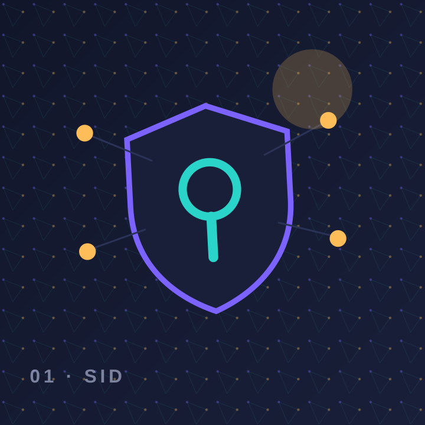
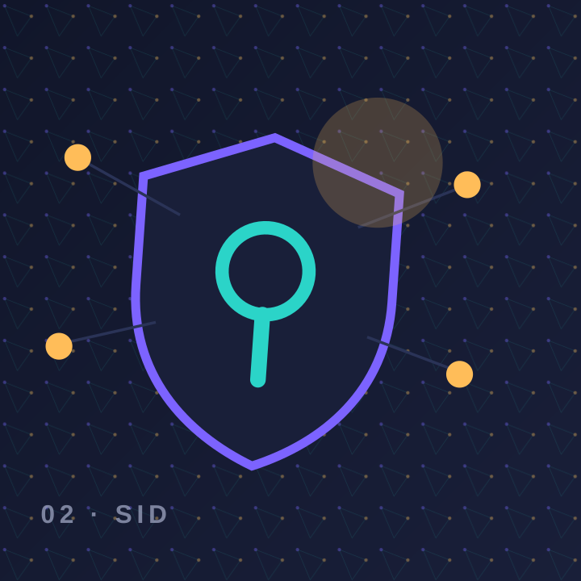
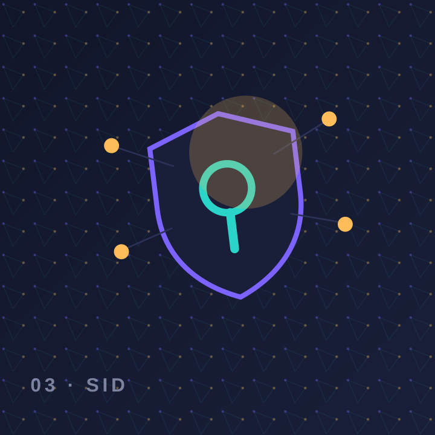

Finance-Approvers
18 miembros · Recertificación pendiente
Elementos explorables con búsqueda, filtros y llamadas a la acción.

18 miembros · Recertificación pendiente

42 miembros · 4 accesos por revisar

26 miembros · Política vigente
11 miembros · MFA obligatorio
31 miembros · Caducidad activa
9 miembros · Revisión trimestral
Contenido estructurado para personas, buscadores y motores de respuesta.
El MVP se plantea principalmente consultivo. Acciones sensibles deben requerir rol, aprobación, registro y controles adicionales.
El brief define Okta como primera integración y deja la arquitectura preparada para Microsoft Entra ID.
No. El prototipo usa identidades sintéticas y no contiene credenciales ni conexión a ningún tenant.